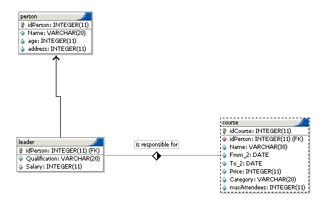
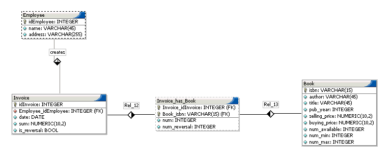

| SimpleWebFront User Documentation | ||
|---|---|---|
| Prev | Chapter 3. Limitations | |
SWF's model is based on views. if you cannot model/design something as a view it can't be handled by the SWF or shown on the created webpages.
As explained in the Section called Basic Concepts in Chapter 1 and in the Section called SWF's basic concepts in more detail in Chapter 1 a view basically represents a table. (often called the Main-Table) It is possible to attatch a select-clause (projection) as well as a where-clause(selection) to a view. Moreover one can integrate Lookup-Tables and NM-Tables into this view but let's face it. This is far too restrictive. Sometimes you would like for example to have a lookup-table joined with another table but this is simply not possible.
if it is not clear yet, consider the following example:
Example 3-1. Limitation example
Consider a simple database as it is depicted in the figure below.

You would like to create view that shows each course together with its leader. So we would select the table course as our main-Table, and could consequently perform a lookup-join with the table leader since course has the foreign key of leader. Unfortunatley this is not enough if we want to see the name of the leader and not only its number, because in our case leader inherits from person, which means that the name-attribute is stored in the person-table and not in the leader-table. We would need a way to have the leader-table also joined with the person table. This is not possible with the SWF though.
There is no real clean workaround for this problem either. Actually your only option is to change the database-model. In our example this would mean to store the name and all other person attributes in the leader table, thus not inheriting leader from person. In our example this might be okay, but in other circumstances it may be not.
This is best explained in the form of an example.
Example 3-2. Domain-specific-Limitation example
Consider a simple database as it is depicted in the figure below.

On first thought this seems to be a good example for the abilities of the SWF. We could make a view "Invoice" that joins with the Employee as well as the book table. So assume we are in a bookshop, have this database model, and a customer buys a book. We could create a new invoice in our view Invoice and fill out the name of the employee and all the books that the customer bought.
On second thought we notice that selling a book (creating an invoice for a customer) also means having one book less in our bookshop. We would have to decrement the attribute num_available in the table book automatically when creating an invoice. This is not supported by the SWF.